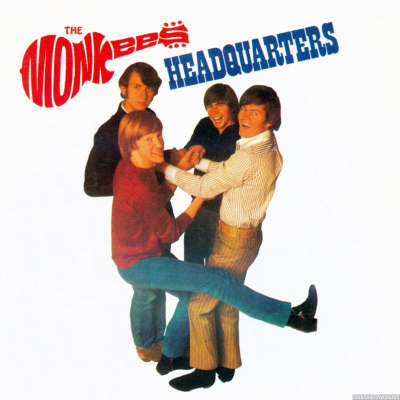

Headquarters Sessions

Release year:
In 1967, The Monkees found themselves at RCA Studio C in Hollywood as a working band. And the album they were about to create, Headquarters, would be released on May 20, 1967; a month later it would hit #1 on the Billboard Hot 100, and remain in the Top Ten for almost three months.
Buy Now!Tracklist
- She's So Far Out She's In [Tracking Sessions Takes 1 & 2]
- The Girl I Knew Somewhere [First Version - Tracking Session Composite Takes 1 to 16]
- The Girl I Knew Somewhere [ First Version - Master Backing Track, Take 22]
- All Of Your Toys [Rehearsal]
- All Of Your Toys [Tracking Session Composite Take 1 to 10]
- All Of Your Toys [Master Backing Track - Take 20
- The Girl I Knew Somewhere [Second Version - Tracking Session Composite feat. Track 15]
- The Girl I Knew Somewhere [Second Version - Tracking Overdub Session Takes 1 & 2]
- The Girl I Knew Somewhere [Second Version - Master Backing Track Take 13A]
- Seeger's Theme [Demo]
- Can You Dig It? [Demo]
- Nine Times Blue - Previously Unissued - Demo Version
- Until It's Time For You To Go [Demo Vocal]
- She'll Be There
- Midnight Train [Demo Version]
- Sunny Girlfriend [Acoustic Remix of Master Vocal
- Sunny Girlfriend [Tracking Session Take 7 with Scratch Vocal]
- Mr Webster [Tracking Session Take 28]
- Band 6 [Stereo Master]
- Setting Up The Studio For Randy Scouse Git [Studio Dialogue]
- Randy Scouse Git [Tracking Session Composite]
- Randy Scouse Git [Alternate Version Take 18 Vocal]
- You Told Me [Master Backing Track]
- Monkee Chat [Studio Dialogue]
- You Told Me [Take 15 With Rough Lead Vocal]
- Zilch [Peter Tork Vocal Track]
- Zilch [Davy Jones Vocal Track]
- Zilch [Micky Dolenz Vocal Track]
- Zilch [Micheal Nesmith]
- I'll Spend My Life With You [Master Backing Track Take 9]
- Randy Scouse Git [Master Backing Track - Take 23]
- Forget That Girl [Rehearsal]
- Forget That Girl [Master Backing Track]
- Where Has It All Gone [First Version - Tracking Session Take 1]
- Memphis Tennessee
- Twelve-String Improvisation
- Where Has It All Gone [Second Version - Master Basic Track Take 12]
- Jericho
- Forget That Girl [Rough Backing Vocals]
- Peter's Gunn Gun - Previously Unissued
- I Was Born in East Virginia [Informal Recording Vocal]
- Forget That Girl [Rejected Overdub Session Vocal]
- Randy Scouse Git [Alternate Mix With Unused Tag Vocal]
- Micky In Carlsbad Cavern [Studio Dialogue]
- Pillow Time [Take 1 Vocal]
- Shades Of Gray [Master Backing Track Take 98]
- Masking Tape [Tracking Session Composite Takes 6 To 8]
- You Just May Be The One [Tracking Session Composite]
- You Just May Be The One [Master Backing Track]
- No Time [First Version - Tracking Session Composite Takes 3 to 5]
- Blues [excerpt]
- I Can't Get Her Off My Mind [Master Backing Track]
- Banjo Jam [excerpt]
- Cripple Creek
- Six-String Improvisation
- The Story Of Rock & Roll [First Version - Tracking Session Take 23]
- Early Morning Blues And Greens [Master Backing Track]
- Two-Part Invention in F Major [Informal Recording]
- The Story Of Rock & Roll [Second Version - Tracking Session Take 5A]
- Don't be Cruel
- For Pete's Sake [Master Backing Track]
- No Time [Second Version - Tracking Session Composite]
- No Time [Second Version - Master Backing Track Take 7A
- Just A Game [Demo Takes 1 to 3]
- Fever
- Sunny Girlfriend (Master Backing Track)
- No Time [Second Version - Master Take 7A with Backing Vocals]
- All Of Your Toys
- The Girl I Knew Somewhere
- For Pete's Sake [Closing Theme]
- I'll Spend My Life With You
- Forget That Girl
- You Just May Be The One - TV Version
- Shades Of Gray
- Band 6
- Sunny Girlfriend
- Mr. Webster
- You Told Me
- The Girl I Knew Somewhere [Second Version - Mono Master]
- Zilch [Mono Master]
- Early Morning Blues and Greens [Mono Master]
- Randy Scouse Git [Mono Master]
- I Can't Get Her Off My Mind [Mono Master]
- No Time [Mono Master]